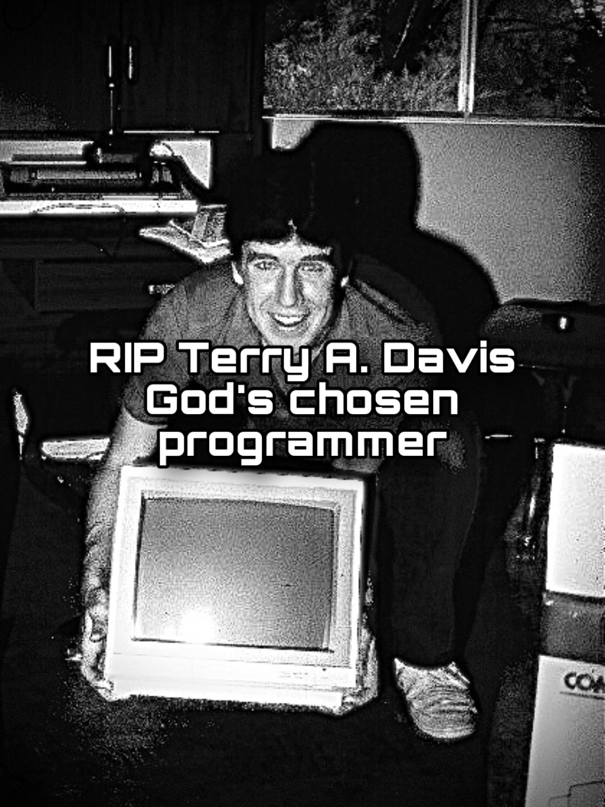

Welcome!
I'm dasher (Piotr) from Poland. I'm highly interested in tech, especially in operating systems and software. I speak Polish and English fluently. Currently learning German, also planning to start learning Russian at some point in life. If you wish to contact me (pls do I have no friends) feel free to message me on discord or telegram. If you wish you also may send me an E-Mail.
In memory of Terry A. Davis, the creator of TempleOS. A very brave person that unfortunately had suffered difficult mental illnesses. He's my role-model since he shows that the craziest and most unrealistic things are possible if you do NOT give up.